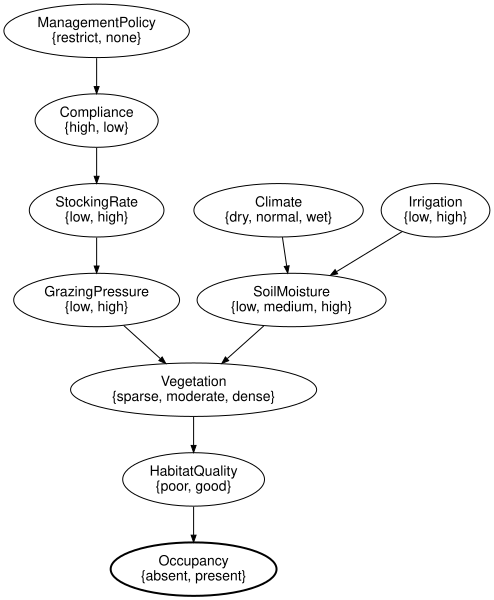
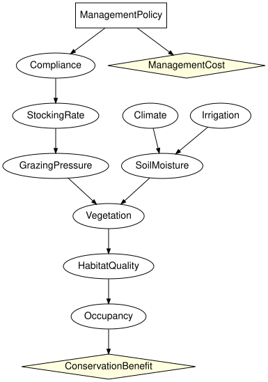

Direct intervention versus imperfect implementation
Simon Frost
- Overview
- Setup
- The implementation chain as an open network
- Binding the numbers
- Direct intervention versus deciding the policy
- Compliance as the lever
- The cost-benefit trade-off as an influence diagram
- Summary
- References
Overview
A manager cannot set grazing pressure. What can be set is a policy; whether it lowers the pressure depends on compliance and on the stocking rate that results. SPEC section 42 asks for this chain to be modelled explicitly,
ManagementPolicy -> Compliance -> StockingRate -> GrazingPressure -> Vegetationrather than only as do(GrazingPressure = low). This vignette builds the chain as an open network, glues it onto the reference habitat network of SPEC section 45 with the composition operations of CategoricalBayesianNetworks.jl, compares the direct intervention with the implementable one under uncertain compliance, and finishes with the cost-benefit trade-off as a small influence diagram.
Modelling the lever rather than the outcome is what makes the result usable for management: a conservation decision is taken over the policy that can be set, not over the ecological variable one wishes to control (Marcot et al. 2006; Runge et al. 2011).
Setup
using EcologicalBayesianNetworks
using BayesianNetworks
using CategoricalBayesianNetworks: Open, compose, glue, apex, inputs, outputs
using InfluenceDiagrams
ref = reference_habitat_model()BayesModel(7 variables, 7 mechanisms, 7 kernels)The implementation chain as an open network
The chain is a closed network on its own (the policy has a prior), and its GrazingPressure is an output. The habitat network is written with GrazingPressure left exogenous (closed = false), so that it can be an input. Open checks the typed-interface rule: inputs have no mechanism, every mechanism-free variable is an input.
chain = bayesnet(:ManagementPolicy => [:restrict, :none], :Compliance => [:high, :low],
:StockingRate => [:low, :high], :GrazingPressure => [:low, :high];
mechanisms = [:Compliance => :ManagementPolicy, :StockingRate => :Compliance,
:GrazingPressure => :StockingRate])
habitat = bayesnet(:Climate => [:dry, :normal, :wet], :Irrigation => [:low, :high],
:SoilMoisture => [:low, :medium, :high], :GrazingPressure => [:low, :high],
:Vegetation => [:sparse, :moderate, :dense], :HabitatQuality => [:poor, :good],
:Occupancy => [:absent, :present];
mechanisms = [:Climate => (), :Irrigation => (),
:SoilMoisture => (:Climate, :Irrigation),
:Vegetation => (:SoilMoisture, :GrazingPressure),
:HabitatQuality => :Vegetation, :Occupancy => :HabitatQuality],
closed = false)
C = Open(chain; outputs = [:GrazingPressure])
H = Open(habitat; inputs = [:GrazingPressure], outputs = [:Occupancy])
println(C)
println(H)OpenBayesNet(4 variables, 4 mechanisms; Symbol[] -> [:GrazingPressure])
OpenBayesNet(7 variables, 6 mechanisms; [:GrazingPressure] -> [:Occupancy])compose glues the output of the chain to the input of the habitat network (a pushout along the shared variable space); glue(C, H; along = [:GrazingPressure => :GrazingPressure]) does the same with explicit pairs. The composite has no inputs left and Occupancy as its output.
G = compose(C, H)
inputs(G), outputs(G), sort(variable_names(apex(G)))(Symbol[], [:Occupancy], [:Climate, :Compliance, :GrazingPressure, :HabitatQuality, :Irrigation, :ManagementPolicy, :Occupancy, :SoilMoisture, :StockingRate, :Vegetation])to_graphviz(G)
Binding the numbers
The apex of the composite is an ordinary closed network. The habitat kernels are copied from the reference model (bind_kernel accepts a kernel whose axes match the mechanism’s parents); the chain gets tables of its own: a restriction is complied with 70% of the time, compliance keeps the stocking rate low 90% of the time, and a low stocking rate gives low pressure 90% of the time.
full = BayesModel(apex(G))
full = bind_kernel(full, [x => kernel(ref, x)
for x in (:Climate, :Irrigation, :SoilMoisture, :Vegetation,
:HabitatQuality, :Occupancy)])
full = bind_cpt(full, [:ManagementPolicy => [0.5, 0.5],
:Compliance => [0.7 0.3; 0.1 0.9], # rows: restrict, none
:StockingRate => [0.9 0.1; 0.2 0.8], # rows: high, low compliance
:GrazingPressure => [0.9 0.1; 0.15 0.85]]) # rows: low, high stocking
validate(full; closed = true, unique_names = true, semantics = true)Direct intervention versus deciding the policy
do(GrazingPressure = low) is the ideal: the pressure is low with certainty. do(ManagementPolicy = restrict) is what a manager can do; the pressure is then low only with the probability the chain allows.
present(m) = round(marginal(m, :Occupancy).table[2]; digits = 4)
(baseline = present(full),
do_pressure_low = present(do_intervention(full, :GrazingPressure => :low)),
do_policy_restrict = present(do_intervention(full, :ManagementPolicy => :restrict)),
do_policy_none = present(do_intervention(full, :ManagementPolicy => :none)))(baseline = 0.4769, do_pressure_low = 0.5117, do_policy_restrict = 0.4881, do_policy_none = 0.4658)round.(marginal(do_intervention(full, :ManagementPolicy => :restrict), :GrazingPressure).table; digits = 4)2-element Vector{Float64}:
0.6675
0.3325Restricting grazing moves the occupancy probability only part of the way towards what guaranteed low pressure would give, because a third of the time the restriction does not translate into low pressure. Since ManagementPolicy is a root, observing the policy and intervening on it agree; the difference between observe and do_intervention appears further down the chain, where observing low pressure is also evidence about compliance and the policy:
(observe_low = round.(marginal(observe(full, :GrazingPressure => :low), :ManagementPolicy).table; digits = 4),
do_low = round.(marginal(do_intervention(full, :GrazingPressure => :low), :ManagementPolicy).table; digits = 4))(observe_low = [0.6544, 0.3456], do_low = [0.5, 0.5])Compliance as the lever
Rebinding the Compliance table sweeps the probability that a restriction is complied with; the effect of the policy on occupancy grows with it and reaches the direct intervention only in the limit of perfect implementation.
println(" P(comply) P(present | do(restrict))")
for p in (0.3, 0.5, 0.7, 0.9, 1.0)
m = bind_cpt(full, :Compliance => [p 1-p; 0.1 0.9])
println(lpad(p, 8), " ", present(do_intervention(m, :ManagementPolicy => :restrict)))
end P(comply) P(present | do(restrict))
0.3 0.4732
0.5 0.4807
0.7 0.4881
0.9 0.4955
1.0 0.4993The cost-benefit trade-off as an influence diagram
Making ManagementPolicy a decision and attaching a conservation benefit to occupancy and a cost to the restriction turns the question into a decision problem. The kernels are the ones already bound above; the diagram only adds the decision and the two utility nodes.
id = influence_diagram(:ManagementPolicy => [:restrict, :none], :Compliance => [:high, :low],
:StockingRate => [:low, :high], :GrazingPressure => [:low, :high],
:Climate => [:dry, :normal, :wet], :Irrigation => [:low, :high],
:SoilMoisture => [:low, :medium, :high],
:Vegetation => [:sparse, :moderate, :dense],
:HabitatQuality => [:poor, :good], :Occupancy => [:absent, :present];
mechanisms = [:Compliance => :ManagementPolicy, :StockingRate => :Compliance,
:GrazingPressure => :StockingRate,
:SoilMoisture => (:Climate, :Irrigation),
:Vegetation => (:SoilMoisture, :GrazingPressure),
:HabitatQuality => :Vegetation, :Occupancy => :HabitatQuality],
decisions = [:ManagementPolicy => Symbol[]],
utilities = [:ConservationBenefit => :Occupancy,
:ManagementCost => :ManagementPolicy])
idm = InfluenceDiagramModel(id)
idm = bind_kernel(idm, [x => kernel(full, x)
for x in (:Climate, :Irrigation, :SoilMoisture, :Vegetation, :HabitatQuality,
:Occupancy, :Compliance, :StockingRate, :GrazingPressure)])
idm = bind_utility(idm, [:ConservationBenefit => [0.0, 1000.0], :ManagementCost => [-10.0, 0.0]])
to_graphviz(idm; states = false)
The expected utility of each action, and the optimum (both backends agree):
[a => round(expected_utility(idm, :ManagementPolicy => a); digits = 2) for a in (:restrict, :none)]2-element Vector{Pair{Symbol, Float64}}:
:restrict => 478.11
:none => 465.79sol = optimize(idm)
sol.expected_utility, policy_table(sol.strategy[:ManagementPolicy]),
optimize(idm, ExhaustivePolicySearch()).expected_utility ≈ sol.expected_utility(478.10640718749994, fill(:restrict), true)At 70% compliance the restriction is worth its cost of 10. Whether it stays worth it depends on compliance, which is exactly the point of modelling the chain: at low compliance the same restriction no longer pays.
println(" P(comply) EU(restrict) EU(none) optimal")
for p in (0.3, 0.5, 0.7, 0.9, 1.0)
m = bind_cpt(idm, :Compliance => [p 1-p; 0.1 0.9])
eu = [expected_utility(m, :ManagementPolicy => a) for a in (:restrict, :none)]
println(lpad(p, 8), " ", lpad(round(eu[1]; digits = 2), 8), " ",
lpad(round(eu[2]; digits = 2), 8), " ", eu[1] > eu[2] ? :restrict : :none)
end P(comply) EU(restrict) EU(none) optimal
0.3 463.23 465.79 none
0.5 470.67 465.79 restrict
0.7 478.11 465.79 restrict
0.9 485.54 465.79 restrict
1.0 489.26 465.79 restrictFinally, the value of perfect implementation: under do(GrazingPressure = low) the decision no longer matters for the ecology, the optimal action is the free one, and the gain over the best implementable decision is what a manager could pay for a mechanism that guaranteed low pressure.
direct = optimize(do_intervention(idm, :GrazingPressure => :low))
(perfect = round(direct.expected_utility; digits = 2),
best_decision = round(sol.expected_utility; digits = 2),
value_of_perfect_implementation = round(direct.expected_utility - sol.expected_utility; digits = 2))(perfect = 511.66, best_decision = 478.11, value_of_perfect_implementation = 33.55)Summary
Writing the implementation chain out as an open network and gluing it onto the habitat network makes the difference between do(GrazingPressure = low) and choosing a management policy explicit and quantitative: the implementable decision is worth strictly less, and the gap is the value of perfect implementation – what a mechanism that guaranteed compliance would be worth. Compliance, not the policy label, is the lever the numbers respond to. The next vignette, A Song Sparrow decision network, leaves the reference fixtures for a published network from the BNMA repository.
References
<div id="refs" class="references csl-bib-body hanging-indent">
<div id="ref-Marcot2006" class="csl-entry">
Marcot, Bruce G., J. Douglas Steventon, Glenn D. Sutherland, and Robert K. McCann. 2006. “Guidelines for Developing and Updating Bayesian Belief Networks Applied to Ecological Modeling and Conservation.” Canadian Journal of Forest Research 36 (12): 3063–74. https://doi.org/10.1139/x06-135.
</div>
<div id="ref-Runge2011" class="csl-entry">
Runge, Michael C., Sarah J. Converse, and James E. Lyons. 2011. “Which Uncertainty? Using Expert Elicitation and Expected Value of Information to Design an Adaptive Program.” Biological Conservation 144 (4): 1214–23. https://doi.org/10.1016/j.biocon.2010.12.020.
</div>
</div>